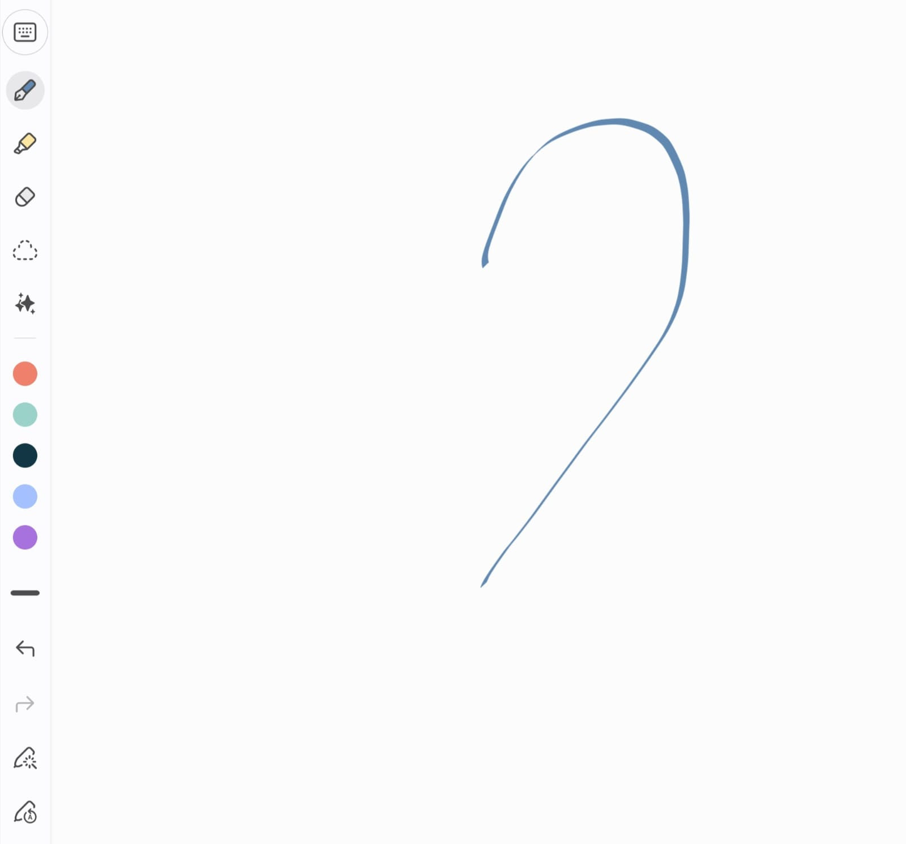

On the kind of love you cannot explain, and would not want to

I have never been able to define love, and I have come to suspect that this is the point.
What I can say is that it is given, not built. Whatever else love is, it arrives the way rain arrives: nobody standing in the field made it happen, and everybody standing in the field gets wet. It is a gift. And the only honest posture toward a gift is gratitude, not pride, not strategy, not the quiet arithmetic of what we think we earned.
Ask me why I love someone and watch me fail.
I could tell you she is kind. I could tell you she is patient, that she laughs half a second before the joke lands, that something in her steadies the noise in me. Every one of those answers embarrasses me a little, because a reason is a thing that can be outbid. If I love her because she is kind, then what I love is kindness, and kindness lives in a thousand other people. If I love her because she is beautiful, then what I love is beauty, which time has a habit of rearranging. A reason names a quality. A quality is not a person.
So here is what I believe, and I hold it gently, because I know how it sounds: if you can give one reason, just one, cleanly, without hesitating, you may not be in love yet. You are in love with the reason. You are holding the wrapping and calling it the gift.
Real love is quieter, and much harder to defend in an argument. It comes without a because. You cannot trace it back to a first cause. You only notice that it is already there, the way you look up and realize the weather changed while you were reading.
And it makes things easy. That is the part I trust most.
Not easy as in nothing goes wrong, plenty goes wrong. Easy as in unforced. You are not managing it. You are not spending yourself down to the last coin to keep it standing upright. There is a kind of effort that leaves a person hollow at the end of the day, and love, the real thing, does not ask for it. When something has to be pushed that hard, it may be many things: duty, hope, habit, the fear of an empty room. It is probably not this.
The Indonesian actress Laura Basuki said something on the podcast Alvin in Love, in an episode titled "Belajar Titik Terendah dan Tergelap, Laura Basuki Sharing Peran, Pasangan, Fakta, Ternyata...", that I have never quite been able to shake: "Cinta itu sebenarnya adalah sesuatu yang tidak perlu diusahakan ya, kita nggak pernah tau kapan kita bisa jatuh cinta, kapan kita bisa berhenti mencintai dan kita jatuh cinta ke siapa itu ga bisa di kontrol. Jadi, it's a blessing sih sebenarnya. Kalau kita masih bisa merasakan cinta pada apapun itu, itu harus disyukuri gitu." Love, she was saying, is not something you can force. We never know when we will fall in love, when we will stop, or who we will fall for; none of it is something we control. So it really is a blessing. If we can still feel love for anything at all, that alone is something to be grateful for. I have carried her words around for years. They sound like resignation until you sit with them, and then they sound like mercy.
I have felt it. Not in ideal conditions. Not in a season anyone would have called easy, and not in a story that ended the way I would have written it. It does not wait for the circumstances to be clean. Heaven, it turns out, is not fussy about the address. Something inside an imperfect situation was so plainly good that I stopped asking it to explain itself and simply let it be good.
Then it left, the way weather leaves.
I miss it now. That is the plain truth of where I am writing from. I do not know how it returns, or when, or through whom, and I have finally stopped trying to put it on a calendar. What I have instead is a suspicion that has survived everything else: the plan I would have written for myself is not the better plan. It never was. Mine was smaller, and it was always in a hurry. God's plan, I have come to believe, is always the better one, wider than anything I could have drafted for myself, and in no rush to explain itself before it is ready.
So I am keeping the field open.
If it rains again, I will know what to call it. And I will not ask why.
Tentang cinta yang tidak bisa dijelaskan, dan memang tidak perlu dijelaskan
Aku tidak pernah bisa mendefinisikan cinta, dan aku mulai curiga bahwa memang itulah intinya.
Yang bisa aku katakan, cinta itu diberikan, bukan dibangun. Apa pun cinta itu sebenarnya, ia datang seperti hujan datang: tidak ada seorang pun yang berdiri di ladang yang membuatnya terjadi, dan semua yang berdiri di ladang itu basah. Ia adalah sebuah pemberian. Dan satu-satunya sikap yang jujur terhadap sebuah pemberian adalah rasa syukur, bukan kebanggaan, bukan strategi, bukan hitungan diam-diam tentang apa yang kita rasa layak kita dapatkan.
Tanyakan padaku mengapa aku mencintai seseorang, dan saksikan aku gagal menjawabnya.
Aku bisa bilang dia baik hati. Aku bisa bilang dia sabar, bahwa dia tertawa setengah detik sebelum lelucon itu selesai diucapkan, bahwa ada sesuatu dalam dirinya yang meredakan kebisingan dalam diriku. Setiap jawaban itu sedikit membuatku malu, karena sebuah alasan adalah sesuatu yang bisa ditawar lebih tinggi oleh orang lain. Kalau aku mencintainya karena dia baik hati, maka yang aku cintai adalah kebaikan hati, dan kebaikan hati ada pada ribuan orang lain. Kalau aku mencintainya karena dia cantik, maka yang aku cintai adalah kecantikan, dan waktu punya kebiasaan menata ulang itu. Sebuah alasan menyebut sebuah kualitas. Kualitas bukanlah seseorang.
Jadi inilah yang aku percaya, dan aku memegangnya dengan hati-hati, karena aku tahu bagaimana kedengarannya: kalau kau bisa memberi satu alasan, hanya satu, dengan bersih, tanpa ragu, mungkin kau belum benar-benar jatuh cinta. Kau jatuh cinta pada alasannya. Kau memegang bungkusnya dan menyebutnya hadiah.
Cinta yang sesungguhnya lebih senyap, dan jauh lebih sulit dibela dalam sebuah perdebatan. Ia datang tanpa sebab. Kau tidak bisa melacaknya kembali ke satu penyebab pertama. Kau hanya menyadari bahwa ia sudah ada di sana, seperti saat kau menengadah dan sadar cuacanya sudah berubah selagi kau sedang membaca.
Dan ia membuat segalanya menjadi mudah. Itulah bagian yang paling aku percayai.
Mudah bukan berarti tidak ada yang salah, banyak yang tetap salah. Mudah dalam artian tidak dipaksakan. Kau tidak sedang mengelolanya. Kau tidak sedang menghabiskan dirimu sampai koin terakhir hanya untuk membuatnya tetap berdiri tegak. Ada semacam usaha yang membuat seseorang kosong di penghujung hari, dan cinta, yang sungguhan, tidak pernah meminta itu. Ketika sesuatu harus didorong sekeras itu, ia bisa jadi banyak hal: kewajiban, harapan, kebiasaan, ketakutan akan ruangan yang kosong. Kemungkinan besar, ia bukan cinta.
Aktris Laura Basuki pernah mengatakannya dengan gamblang di podcast Alvin in Love, dalam episode berjudul "Belajar Titik Terendah dan Tergelap, Laura Basuki Sharing Peran, Pasangan, Fakta, Ternyata...", sesuatu yang tidak pernah benar-benar bisa aku lepaskan: "Cinta itu sebenarnya adalah sesuatu yang tidak perlu diusahakan ya, kita nggak pernah tau kapan kita bisa jatuh cinta, kapan kita bisa berhenti mencintai dan kita jatuh cinta ke siapa itu ga bisa di kontrol. Jadi, it's a blessing sih sebenarnya. Kalau kita masih bisa merasakan cinta pada apapun itu, itu harus disyukuri gitu." Aku membawa kata-katanya itu selama bertahun-tahun. Kedengarannya seperti kepasrahan sampai kau benar-benar merenunginya, dan setelah itu, kedengarannya seperti belas kasih.
Aku pernah merasakannya. Bukan dalam kondisi yang ideal. Bukan dalam masa yang akan disebut siapa pun sebagai masa yang mudah, dan bukan dalam kisah yang berakhir seperti yang akan aku tuliskan sendiri. Ia tidak menunggu keadaan menjadi bersih dulu. Surga, ternyata, tidak rewel soal alamat. Sesuatu di dalam situasi yang tidak sempurna itu begitu jelas baiknya sehingga aku berhenti memintanya menjelaskan dirinya sendiri, dan hanya membiarkannya baik apa adanya.
Lalu ia pergi, seperti cuaca pergi.
Aku merindukannya sekarang. Itulah kebenaran polos dari tempat aku menulis ini. Aku tidak tahu bagaimana ia akan kembali, atau kapan, atau lewat siapa, dan aku akhirnya berhenti mencoba menaruhnya di kalender. Yang aku miliki sebagai gantinya adalah sebuah dugaan yang bertahan melewati segalanya: rencana yang akan aku tuliskan untuk diriku sendiri bukanlah rencana yang lebih baik. Tidak pernah begitu. Milikku lebih kecil, dan selalu terburu-buru. Rencana Tuhan, aku mulai percaya, selalu menjadi rencana yang lebih baik, lebih luas daripada apa pun yang bisa aku rancang sendiri, dan tidak pernah terburu-buru menjelaskan dirinya sebelum waktunya tiba.
Jadi aku membiarkan ladang itu tetap terbuka.
Kalau hujan turun lagi, aku akan tahu harus menyebutnya apa. Dan aku tidak akan bertanya mengapa.